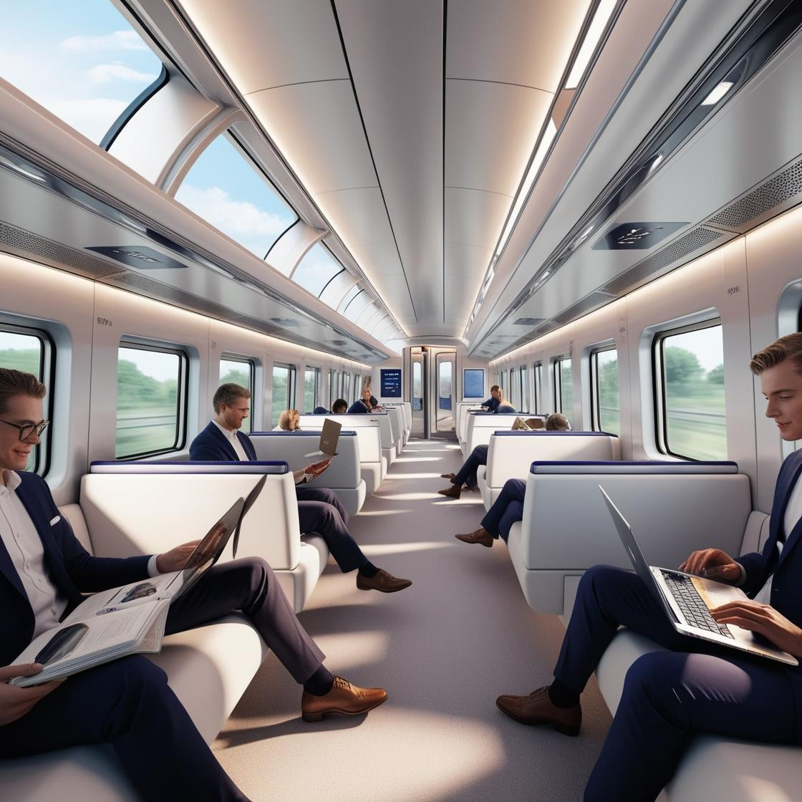
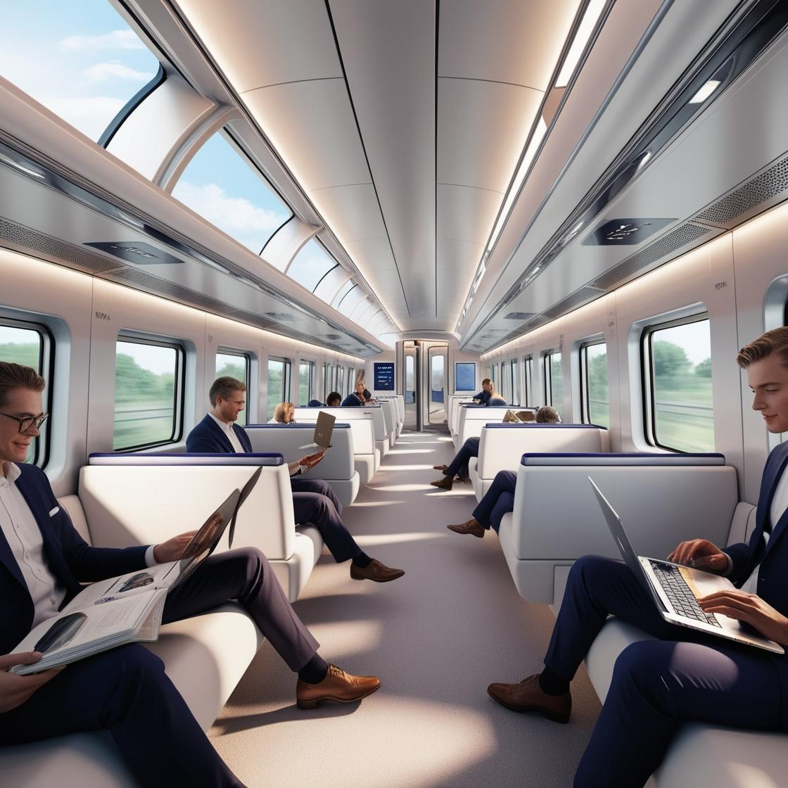

Green Tech
 

В днешния свят, когато климатичните промени и устойчивото развитие стават все по-важни, технологиите играят ключова роля в създаването на решения, които намаляват въздействието ни върху околната среда. Един от примерите за това е развитието на екологични влакове, които не само предлагат по-ефективен и бърз транспорт, но и намаляват замърсяването и вредните емисии.
Съвременните влакове, използващи иновативни зелени технологии, са проектирани да намалят въглеродния отпечатък чрез използването на възобновяема енергия и по-ефективни енергийни системи. Един от основните фокуси на тези влакове е преминаването към електрическа енергия, добита от слънчеви панели, вятърни турбини или водородни клетки.
Чрез оптимизирани системи за регенеративно спиране, влаковете също така успяват да събират и съхраняват енергия по време на пътуването, което ги прави още по-ефективни. Някои модели дори разполагат със специални материали, които намаляват теглото на вагоните и същевременно повишават тяхната здравина, което позволява постигане на по-високи скорости с по-малко изразходвана енергия.
Тези влакове не само намаляват вредните емисии, но и допринасят за по-чиста и по-устойчива градска среда, осигурявайки алтернатива на автомобилите и самолетите за пътуване на дълги разстояния. Те са пример за това как зелени технологии могат да бъдат внедрени в нашето ежедневие и да допринесат за опазването на природата, без да компрометират комфорта и удобството на пътниците.
Разгледай други влакове